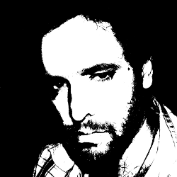

Atenção - este currículo está desatualizado. A versão mais atual é a do Lattes.
Felipe Fonseca é pesquisador e articulador de projetos relacionados a redes de produção colaborativa e livre, mídia independente, software livre e apropriação crítica de tecnologia.
O que eu tenho feito...
Seminário da Prainha, Fortaleza, CE
Parque dos Igarapés, Belém/PA – Agosto 2011 Puraqué Digital, Santarém/PA – Agosto 2011
SESC Pompeia, São Paulo/SP – Julho 2011
PUC-RS, Porto Alegre/SP – Junho 2011
Centro de Convenções Imigrantes, São Paulo – Janeiro 2011
Cinemateca Brasileira, São Paulo, novembro 2010
SESC, Araraquara, ago 2010
Medialab Prado, Madrid, jun 2010 - website.
Manchester, Reino Unido, mai 2010 - website.
Genebra, Suíça, mai 2010 - website.
Centro de Convenções Imigrantes, São Paulo, jan 2010 - website.
Sesc Av. Paulista, São Paulo, dez 2009.
Matilha Cultural, São Paulo, nov 2009 - website.
MIS, São Paulo, nov 2009 - website.
Paço das Artes, São Paulo, out 2009 - website.
Relato aqui.
MIS, São Paulo, abr 2009 - website.
Relatos aqui.
Studio K, Amsterdam, mar 2009 - website.
Relatos aqui.
Centro de Convenções Imigrantes, São Paulo, jan 2009
Imperial College, Londres, Reino Unido, mai 2008
Apresentação sobre MetaReciclagem, Submidialogia, DesCentro e o contexto brasileiro como parte da série Systems of Learning.
Manchester, Reino Unido, mai 2008 - website
Relatos publicados aqui.
CCCB, Barcelona, Espanha, abr 2008
Apresentação sobre redes de criatividade. Relato aqui.
Medialab Prado, Madrid, Espanha, fev 2008 - website
Apresentação sobre criação colaborativa e tecnologia social no Brasil.
Haus der Kulturen der Welt, Berlim, Alemanha, jan 2008 - website
Debate Web3 - Conspiring to keep the net public.
Amsterdam, Países Baixos, set 2007 - website
Apresentação "7 unstable definitions on MetaReciclagem".
Amsterdam, Países Baixos, set 2007 - website
Apresentação "MetaReciclagem and Paulo Freire".
São Paulo, mar 2007
Palestra sobre Metareciclagem na disciplina de Sérgio Amadeu - "Práticas colaborativas: web 2.0 e P2P".
Lisboa, Portugal, out 2006 - website
Palestra "Digital Culture - The Brazilian Experience".
Columbia Halle, Berlim, Alemanha, set 2006 - website
Painel "Brazil, free culture nation".
PUC-RS, Porto Alegre, jun 2006
Mesa-Redonda: "Reciclagem X MetaReciclagem".
De Balie, Amsterdam, Holanda, jun 2005 - website
Workshop: FLOSS in ICT4D.
Bangalore, Índia, nov 2004
Apresentação: "MetaReciclagem".
Senac Santo Amaro - São Paulo - jun 2004
Debate: Software Livre.
SESC Campestre, Porto Alegre, jun 2004
Apresentação da MetaReciclagem para o painel Debian-NP, com Dalton Martins.
Senac Lapa, São Paulo, fev 2004
Palestra inaugural para alunos de tecnologia.
Itapeva, dez 2003
São Paulo, nov 2003
Palestra sobre Comunidades Online e Colaboração, com Andre Passamani, para estudantes de comunicação.
Senac Lapa - Sao Paulo - nov 2003
Mesa redonda "A cultura brasileira como uma cultura hacker", com Hernani Dimantas, moderada por Rita de Olveira.
Amsterdam, Holanda, set 2003
São Paulo, ago 2003
Mesa-redonda sobre políticas digitais, com Giseli Vasconcelos, Ricardo Rosas e Pablo Ortellado.
Ação Educativa, São Paulo, out 2002
Mesa-redonda sobre projetos libertários, ação coletiva e CopyLeft, com Roberto Bui, Ricardo Rosas, Marcelo Barbão, Drica Veloso e Tati Wells.
Sesc Av. Paulista, São Paulo, jan 2007 - website
Oficinas conceituais sobre MetaReciclagem.
Sesc Av. Paulista, São Paulo, dez 2006
Oficina sobre apropriação crítica de tecnologia e montagem de pianão reciclado.
Itaú Cultural, São Paulo, jun 2006
Oficina Ciber-reciclagem: como organizar um esporo de MetaReciclagem
PUC-RS, Porto Alegre, jun 2006
Oficina "Se Joga Na Rede".
abr 2006
Elaboração de material para curso on-line a ser aplicado nas Casas Brasil.
LIDEC, Escola do Futuro, São Paulo, mar 2006
Escola Lumiar, São Paulo, nov 2005
Palestra - A cultura hacker e a Gestão democrática do Conhecimento.
IP, Rio de Janeiro, abr 2004 - website
Oficina sobre tecnologia social.
Telecentro do Jardim Copacabana, São Paulo, set 2004
Workshop sobre colaboração online para monitores de telecentros, com Hernani Dimantas e Rossana Fischer
Telecentro Cidade Tiradentes, São Paulo, mar 2003
Oficina "Colaboração Mediada pela Internet"
Participação em discussões abertas e colunismo social em geral.
Salvador, mar 2007 - website
São Paulo, mar 2007 - website
Rio de Janeiro, jun 2006 - website
IP, Rio de Janeiro, set 2005 - website
PUC-RS, Porto Alegre, jun 2004
Mapping-session da Tactical Tech.
Brasília, mai 2003
Grupo de trabalho "Participação da sociedade em projetos de inclusão digital".
Casa das Rosas, São Paulo, mar 2003
Exposição do projeto MetaReciclagem.
São Paulo, 2003
Criação e desenvolvimento de sistemas de gestão de conhecimento, conversação e documentação online, gerenciamento de projetos e outros.
São Paulo, 2003
Projetos de tecnologia.
São Paulo, 2001
Criação multimídia.
Porto Alegre, 1999
Diretor de criação.
Porto Alegre, 1997/99
Diretor de Arte.
| Anexo | Tamanho |
|---|---|
| ffmoi02.jpg | 23.54 KB |
| efeefe.png | 1.48 MB |
| efeefe250.png | 99.81 KB |
| ff_2010_pb_100.JPG | 9.93 KB |
| ff_2010_pb_250.png | 26.65 KB |
Felipe Fonseca is a brasilian media activist and researcher working with technological appropriation, low tech experimentation, free (livre) and open source multimedia software, open licensing and online collaboration.
Felipe is an articulator of projects such as MetaReciclagem, an emergent brasilian movement that gather people and projects related to the deconstruction of information technologies; DesCentro, a de-centralized research organisation; and Bricolabs, an international network of experimental labs.
Felipe has acted also as a consultant for the brasilian Ministry of Culture in the Cultura Digital project, that brought critical ICT use for more than 600 cultural centers throughout Brasilian territory. Worked also with weblab, building collaborative online networks and developing projects such as Lixo Eletrônico, a weblog about e-waste, and Mutirão da Gambiarra, a series of publications about the MetaReciclagem network.
He is currently working with the Brasilian Ministry of Culture articulating a collaborative strategy for experimental labs called Redelabs.
{kind=link}
{kind=link}
{kind=link}